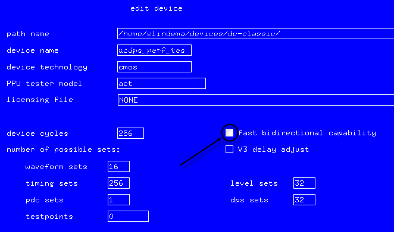
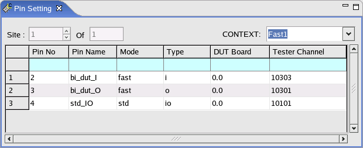
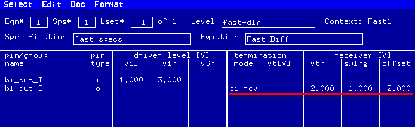

Using the bidir_receiver termination for full swing in fast mode
A match pair of fast mode pins can be combined to operate as bidirectional pins with smaller swing than std pins. You can use the bidir_receiver termination to acquire full swing.
Before you begin
Make sure that you have finished the following task:
- In the edit device dialog set, you have
checked the fast bidirectional capability flag.

- You have set up a match pair of fast pins, for example, two fast pins with channel 10301 and
10303 have been defined,
- the lower numbered channel (10301) configured as a fast o pin
- the higher numbered channel (10303) configured as a fast i pin
See the pins bi_dut_I and bi_dut_O in the figure below:

Procedure
Results
In the Level Setup window, the termination mode column shows bi_rcv and the receiver [V] vth, swing, and offset columns show the values assigned in the level equations.

What to do next
Set up the timing, waveform and pattern as usual.
Functional changes
- Introduced before SmarTest 6.3.2